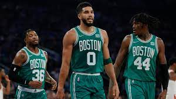

An ordered list of the top five teams going into the 2023 playoffs
Begin The List!This Webpage is a list of the top five championship contenders in the National Basketball Association in the year 2023. Winning the NBA finals is the ultimate goal for every team in the league. This season is especially difficult as their are many different contenders to win it all. This list will use analytics and measurable statistics of the game to determine who the best five teams are this season. It will rank the top five contenders in order and provide reasoning as to their position on the lets. Let the rankings begin!
Denver, Colorado
The Nuggets finished this season with the best record in the NBA's western conference, and the second best record overall. Behind an MVP caliber season by their best player Nikola Jokic, and the return of Jamal Murray and Micheal Porter Jr, the Nuggets have been a great team all year. They do seem to lack bench depth and sometimes have trouble defending their opponets wings, placing them at the number five position on this list.
The Nuggets have been one of the best teams in the west for a few years now. They have made multiple strong playoff runs, but have not yet been able to reach the NBA finals. This has been due to various reasons such as injuries, and inconsistancy, but this year is different. With the majority of their important players back and healthy, the nuggets have a real chance to finally reach the finals, and maybe even win the 2023 NBA title.
The Nuggets Starting Lineup
Philadelphia, Pennsylvania
The 76ers finished the season as the third seed in the eastern conference. They suffered a series of injuries and setbacks during the season, but despite this still ended up third in the standings when they could have been higher. They are led by their all-nba caiber duo of Joel Embiid and James Harden, which might be the best single big and small duo in the nba this season.
The sixers roster has been updated this season with players such as Shake Milton, DeAnthony Melton, and Georges Niang coming off the bench. They have had some of the strongest bench production in the league this season and have been winning lots of games because of it. The 76ers have a great rotation and momentum going into the playoffs as well as a favorable first round matchup, meaning the playoff future is looking bright for the 76ers.
The 76ers Starting Lineup
Phoneix, Arizona
The Suns began the season viewed as a strong playoff team, but not a championship contender. Their flameout in the previous years playoffs had most people looking down on them coming into the 2023 season. Things changed once they made a trade midseason to acquire one of the best forwards in the league, Kevin Durant. Although they sacrificed depth, the trade made then one of the most star studded teams in the league.
The Suns, with their new big four of Paul, Booker, Durant and Ayton, finished the regular season strong winning all but one of their last 10. With their starpower and experience, not to mentiontion excellent coaching, it will be a difficult challenge for any team to knock them off. In addition, playing in the wide open west gives them as good a chance to make a run as any team.
The Suns Starting Lineup
Milwaukee, Wisconsin
The Bucks began the year as most fans favorite team to win the 2023 NBA championship. Giannis Antetokoumpo is widley regarded as the best player in the world, and the Bucks have constructed a very nice roster around him in recent years to complement his game. The Bucks have 3 all NBA defenders on their team and are one of the best defensive and transition offenses in the NBA. Often holding opponets under 100 points per game.
The Bucks are on a mission this season to prove that their 2021 NBA championship was no fluke. They have been in prime position to make a deep playoff run with all their players being healthy, as well as the number 1 seed making their path much easier than other teams on this list. The Bucks also have a very good matchup against most of their eastern conference competitors, meaning it will be very hard to knock them out.
The Bucks Starting Lineup
Boston, Massachusetts
The Boston Celtics finished out the season as the number two seed in the eastern conference. Although they finished behind the Bucks, they outplayed the Bucks head to head multiple times in the regular season. The Celtics have arguably the deepest and most complete rosters in the league with having at least 2-3 very capable players at each position. Lead by their all-NBA duo of Jayson tatum and Jaylen Brown, the Celtics have been rolling teams all year.
The Boston Celtics reached the finals in the previous season, and although they did not win, they showed the league just how dangerous they are in the playoffs. The celtics have agreat mix of young players, experienced veterans, atheletes, and high IQ players. They also have one of the best coaching staffs in the league and maybe the best and most versatile defense. There are many great teams in the playoffs, but Boston has to be the favorite to return to the finals.
The Celtics Starting Lineup

For more information on the 2023 NBA playoffs as well as the teams competing, please visit: www.basketballreference.com.